Résultats disponibles le 17/11/2026 à 05:34 (Europe/Paris). Calculs en double précision sur une RTX 5090. Les références sont obtenues par caractéristiques indépendantes, par retour exact du flot ou par solution analytique, selon le test.
Trois résultats structurent désormais l'étude : une identité d'énergie relative autorise une borne d'erreur malgré les transferts non linéaires; les réactions appliquées au champ complet évitent une mémoire artificiellement persistante; une réalisation linéaire par réflexion orthogonale conserve une précision P4 proche de l'ordre cinq dans le test de translation à changements fréquents. Le rapport détaille aussi les cas où ces méthodes perdent en coût ou en précision.
Ébauche d'article avec preuves et expériences principales (PDF)
Un support auxiliaire mobile résout le défaut observé lorsque la bosse quitte la zone fine d'une grille fixe. Le couplage FE avec mémoire accepte désormais un changement de support contractant, et un raffinement exactement emboîté sans perte d'énergie. Les transferts polynomiaux évitent une inversion globale; la variante de Galerkin diagonalise une petite matrice par champ. Les propriétés sont établies sous les hypothèses de restart_theory.pdf; elles n'établissent ni une nouveauté bibliographique, ni une convergence générale vers l'EDP.
Deux méthodes sont distinguées : le couplage avec mémoire maintient le champ FE à chaque changement; la référence d'advection pure transporte uniquement le champ DG auxiliaire entre une projection FE initiale et une projection FE finale. Cette seconde méthode est la plus rapide ici, mais elle n'offre pas les opérations physiques FE intermédiaires du couplage.
Les contre-tests exposent deux limites importantes : un transfert itératif tronqué peut dissiper même à support inchangé, et un contrôle de maillage tous les quatre pas modifie le problème d'adaptation lorsque le pas diminue. Une variante corrige le premier défaut au prix d'une non-linéarité; une ablation à intervalle physique fixé isole le second. La composition hamiltonienne par SVD perd la comparaison de coût et de précision contre Fourier/RK4 sur le vortex résolu. Ces résultats orientent la suite de la recherche.
Le résultat nouveau de la fin de nuit concerne la physique de la mémoire : une contraction de l'énergie ne suffit pas à reproduire une réaction forte. Le prototype applique désormais la réaction spatiale au champ complet, puis conserve exactement ses moments FE et comprime sa composante cachée dans trois directions. Sur le cas de réaction forte testé, l'erreur relative passe de 32,7 pour un amortissement uniforme de la mémoire à 0,00240 pour ces moments complets, avec un plancher FE de 0,00237. C'est une correction de modèle démontrée sur ce test, à un coût supérieur; ce résultat ne constitue pas à lui seul une avancée bibliographique établie.
Le maillage triangulaire FE reste fixe et porte les opérations de physique. Un second maillage transporte le champ par cisaillements semi-lagrangiens. Après ce transport, le champ FE reçoit l'incrément projeté; l'état auxiliaire est conservé pour le pas suivant. Cette mémoire évite de reconstruire entièrement le champ transporté à chaque pas. Le problème étudié cette nuit est de modifier le support auxiliaire en préservant le champ FE, la masse et un bilan d'énergie contrôlé.
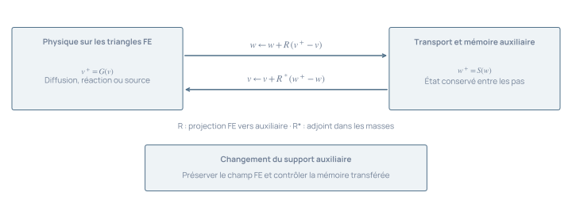
Le domaine est le tore unité. Une vitesse cellulaire incompressible prescrite transporte jusqu'à t=0,25 une bosse de largeur 0,01, initialement centrée en (0,35; 0,45), de norme L2 proche de 1. L'espace FE principal possède 32768 triangles DG P4, soit 491520 coefficients par champ; la graduation fixe vaut 0,95. Le support principal auxiliaire comporte 64×64 cellules Q4, soit 102400 valeurs par champ. Deux supports orientés supplémentaires servent aux cisaillements diagonaux. Les méthodes n'ont donc pas le même nombre d'inconnues.
Le centre circulaire de l'énergie est calculé à partir de la solution, tous les quatre pas. Le support se déplace lorsque ce centre s'éloigne de plus de 0,03. Ce critère convient à une structure localisée; il n'est pas un estimateur d'erreur et ne traite pas plusieurs structures éloignées. La référence intègre les caractéristiques sur GPU par 512 pas RK4; les erreurs sont intégrées avec quadrature de degré 20 et subdivision indépendante. Les extrema sont échantillonnés.


Trois répétitions alternent DG eulérien et support mobile pour 1, 4 et 16 champs distincts et proches spatialement (graine 752). Chaque champ doit satisfaire L2 ≤ 0,001. Le coût inclut construction des opérateurs, détection initiale du centre, évolution, adaptations et transfert final. Le maillage FE et la projection initiale communs, ainsi que les diagnostics de référence, sont exclus des deux côtés. La compilation CUDA utilise le cache; ce ne sont pas des mesures de premier lancement sans cache.
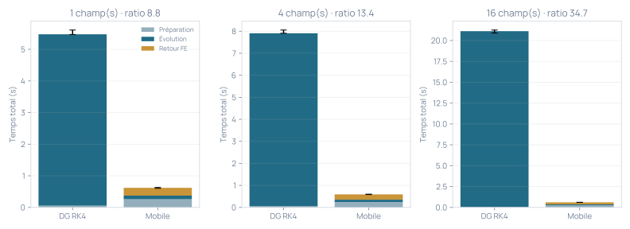
| Champs | DG (s) | Mobile (s) | Ratio | L2 DG max | L2 mobile max |
|---|---|---|---|---|---|
| 1 | 5.475 | 0.6195 | 8.838 | 0.0002865 | 0.0002478 |
| 4 | 7.908 | 0.5916 | 13.37 | 0.0008215 | 0.0004813 |
| 16 | 21.12 | 0.6091 | 34.67 | 0.000877 | 0.0004549 |
Le pas DG retenu passe un contrôle de croissance sur champs aléatoires et la tolérance finale. Le réglage plus agressif (échelle 12) est rejeté : le contrôle aléatoire révèle une croissance d'énergie supérieure au seuil. Ce contrôle fini n'est pas un certificat spectral de stabilité. La variante mobile à 16 pas échoue à la tolérance; le benchmark utilise 64 pas.
Le même opérateur DG triangulaire est aussi intégré par projection d'Arnoldi de l'action exponentielle, avec flux central ou amont. Deux passages d'orthogonalisation et l'exponentielle de la petite matrice sont calculés sur GPU. Le mode constant est conservé explicitement. Cette construction classique, étudiée notamment par Saad (1992), fournit un comparateur à grands pas; la dimension de Krylov et le nombre de pas restent des paramètres de précision.
Le maillage, le champ initial et la tolérance L2 de 0,001 sont ceux du benchmark à un champ. La référence par caractéristiques et la quadrature indépendante sont construites une seule fois, hors chronométrage. Chaque coût inclut l'assemblage DG, un pas de chauffe et l'évolution; aucun graphe CUDA n'est employé pour Arnoldi. Le résidu final de Krylov est enregistré comme indicateur, tandis que l'acceptation repose sur l'erreur physique intégrée.
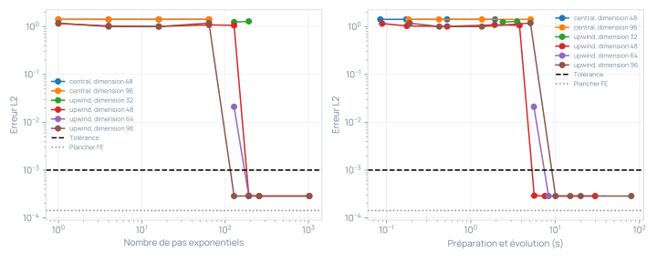
| Flux | Dimension | Pas | L2 | Accepté | Temps (s) |
|---|---|---|---|---|---|
| central | 48 | 1 | 1.414 | non | 0.08463 |
| central | 48 | 4 | 1.414 | non | 0.1717 |
| central | 48 | 16 | 1.414 | non | 0.5239 |
| central | 48 | 64 | 1.414 | non | 1.938 |
| central | 96 | 1 | 1.413 | non | 0.1823 |
| central | 96 | 4 | 1.414 | non | 0.4198 |
| central | 96 | 16 | 1.414 | non | 1.358 |
| central | 96 | 64 | 1.414 | non | 5.125 |
| upwind | 48 | 1 | 1.157 | non | 0.08898 |
| upwind | 48 | 4 | 1.03 | non | 0.1749 |
| upwind | 48 | 16 | 1.006 | non | 0.5249 |
| upwind | 48 | 64 | 1.087 | non | 1.916 |
| upwind | 96 | 1 | 1.18 | non | 0.1886 |
| upwind | 96 | 4 | 1 | non | 0.4228 |
| upwind | 96 | 16 | 0.9996 | non | 1.355 |
| upwind | 96 | 64 | 1.186 | non | 5.095 |
| upwind | 48 | 256 | 0.0002865 | oui | 7.554 |
| upwind | 48 | 1024 | 0.0002865 | oui | 29.78 |
| upwind | 96 | 256 | 0.0002865 | oui | 20.12 |
| upwind | 96 | 1024 | 0.0002865 | oui | 79.93 |
| upwind | 32 | 128 | 1.244 | non | 2.394 |
| upwind | 32 | 192 | 1.284 | non | 3.551 |
| upwind | 48 | 128 | 1.061 | non | 3.78 |
| upwind | 48 | 192 | 0.0002927 | oui | 5.65 |
| upwind | 64 | 128 | 0.02112 | non | 5.595 |
| upwind | 64 | 192 | 0.0002865 | oui | 8.36 |
| upwind | 96 | 128 | 0.0002865 | oui | 10.11 |
| upwind | 96 | 192 | 0.0002865 | oui | 15.11 |
Le meilleur coût accepté dans cette exploration vaut 5.65 s, pour une erreur 0.0002927. Une seule mesure par configuration est disponible ici; la sélection et les répétitions de chronométrage sont distinctes.
L'état est représenté par trois tableaux (v,w,a), avec v=R*w+(I−R*R)a. Son énergie est ||w||²+||a||²−||Ra||². La remise à zéro conserve v mais perd toute la mémoire invisible dans ce champ. Le transfert contractant conserve une partie de cette mémoire. En cas de raffinement exactement emboîté, l'injection corrige w par les nouveaux modes de a et préserve toute l'énergie augmentée.
| FE n | Remise à zéro L2 | Mémoire L2 | Plancher FE |
|---|---|---|---|
| 64 | 0.006198 | 0.003851 | 0.003729 |
| 128 | 0.0001984 | 0.0001602 | 0.0001427 |

Une projection itérative supplémentaire utilise le recouvrement des deux espaces dans le même L2. Son filtre spectral contractant conserve davantage de mémoire lorsque le nombre d'itérations augmente. Cela ne garantit pas une diminution de l'erreur de transport. Les résultats ci-dessous sont rapportés séparément.
| FE n | Itérations | L2 | Coût total (s) |
|---|---|---|---|
| 64 | 1 | 0.003825 | 0.9891 |
| 64 | 2 | 0.003782 | 0.9307 |
| 64 | 4 | 0.003753 | 0.9062 |
| 64 | 8 | 0.003739 | 0.9432 |
| 64 | 16 | 0.003733 | 0.9106 |
| 128 | 1 | 0.0001574 | 1.923 |
| 128 | 2 | 0.000156 | 1.87 |
| 128 | 4 | 0.0001551 | 1.911 |
| 128 | 8 | 0.0001548 | 1.931 |
| 128 | 16 | 0.0001547 | 1.9 |

Une réaction de taux 1+0,5 sin(2πx) est appliquée par l'exponentielle exacte de son générateur Galerkin local, en deux demi-pas autour de chaque advection. Chaque mise à jour FE est réinjectée dans la mémoire. La référence indépendante intègre simultanément la trajectoire et l'exposant de réaction. L'énergie doit décroître; la masse n'est plus conservée par cette EDP.

Le carré d'un résidu de Chebyshev fournit un filtre compris entre zéro et un sur tout le spectre admissible, même sous l'échelle de ciblage choisie. Il conserve donc la contraction et l'observation FE à chaque troncature. Les techniques polynomiales sont classiques; l'intérêt mesuré ici concerne leur insertion dans le transfert de mémoire. L'échelle 0,1 fonctionne mieux que 0,01 sur ce cas; aucune supériorité universelle du réglage n'est établie.

Les trois transferts subissent chacun 2000 changements entre trois supports de graduations 0, 0,95 et 0,9999, entrelacés avec cisaillements et rotations locales de modes FE. Ces rotations sont un test algébrique isométrique, pas une réaction physique. Quatre champs aléatoires sont suivis; le champ FE est inchangé bit à bit au transfert.
| Transfert | Changements | Défaut FE relatif max | Défaut masse max |
|---|---|---|---|
| partial | 2000 | 6.88e-17 | 4.846e-14 |
| richardson | 2000 | 7.58e-17 | 4.802e-14 |
| chebyshev | 2000 | 8.025e-17 | 4.813e-14 |
Quatre champs distincts sont maintenant initialisés avec des centres espacés jusqu'à 0,15 autour de la position centrale. Le centre d'énergie unique ne suffit plus. Une alternative répartit les intervalles selon les marginales d'énergie dans x, y, x+y et x−y : histogrammes périodiques sur GPU, lissage gaussien de largeur 0,005, puissance 1/4, fond uniforme de 25 %, puis inversion de la masse cumulée. C'est une heuristique d'équidistribution; la stabilité vient des projections contractantes, pas d'une prétendue estimation d'erreur par ce moniteur.
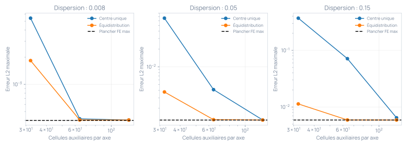

Extension au couplage FE : 12 cas disponibles avec quatre structures séparées, avec ou sans réaction. Le tableau inclut le maillage FE raffiné pour lever le précédent plancher. Les erreurs sont prises sur le pire des quatre champs.
| FE n | Réaction | Support | Itér. | L2 max | Plancher max |
|---|---|---|---|---|---|
| 128 | non | centre | 8 | 0.07137 | 0.005891 |
| 128 | non | énergie | 0 | 0.008536 | 0.005891 |
| 128 | non | énergie | 8 | 0.005928 | 0.005891 |
| 128 | oui | centre | 8 | 0.05704 | 0.004135 |
| 128 | oui | énergie | 0 | 0.005985 | 0.004135 |
| 128 | oui | énergie | 8 | 0.004161 | 0.004135 |
| 256 | non | centre | 8 | 0.0734 | 0.0003436 |
| 256 | non | énergie | 0 | 0.0009183 | 0.0003436 |
| 256 | non | énergie | 8 | 0.0009188 | 0.0003436 |
| 256 | oui | centre | 8 | 0.05817 | 0.0002408 |
| 256 | oui | énergie | 0 | 0.000704 | 0.0002408 |
| 256 | oui | énergie | 8 | 0.0007014 | 0.0002408 |
Le raffinement FE révèle une erreur auxiliaire auparavant masquée. L'étude suivante augmente séparément le nombre de cellules auxiliaires et le nombre de pas, sur le maillage FE n=256. Une amélioration de mémoire ne peut pas supprimer une erreur d'advection ou de résolution dans le support auxiliaire.
| Aux. n | Pas | Réaction | Itér. | L2 max | Plancher max |
|---|---|---|---|---|---|
| 64 | 256 | non | 0 | 0.0005846 | 0.0003436 |
| 64 | 256 | non | 8 | 0.0005897 | 0.0003436 |
| 64 | 256 | oui | 0 | 0.0004556 | 0.0002408 |
| 64 | 256 | oui | 8 | 0.0004553 | 0.0002408 |
| 128 | 128 | non | 0 | 0.0004025 | 0.0003436 |
| 128 | 128 | non | 8 | 0.0003467 | 0.0003436 |
| 128 | 128 | oui | 0 | 0.0002809 | 0.0002408 |
| 128 | 128 | oui | 8 | 0.000243 | 0.0002408 |
| 128 | 256 | non | 0 | 0.0004471 | 0.0003436 |
| 128 | 256 | non | 8 | 0.0003447 | 0.0003436 |
| 128 | 256 | oui | 0 | 0.0003117 | 0.0002408 |
| 128 | 256 | oui | 8 | 0.0002416 | 0.0002408 |
Le flot autonome est suivi pendant une durée T, puis sa vitesse est inversée pendant la même durée. La solution exacte finale est le profil initial : aucune intégration de caractéristiques n'est nécessaire pour cette référence. Les partitions restent adaptées au champ calculé pendant les deux trajets. La dissipation et les pertes de mémoire ne s'annulent pas lors du retour. Une erreur de phase réversible peut toutefois s'annuler : ce test complète les références aller simple sans les remplacer.
| Durée aller | Transfert | Changements | L2 max | Retour FE max |
|---|---|---|---|---|
| 0.25 | reset | 63 | 0.006669 | 0.006668 |
| 0.25 | projected | 63 | 0.0008691 | 0.0008622 |
| 0.25 | chebyshev | 63 | 0.0007821 | 0.0007821 |
| 0.5 | reset | 63 | 0.06498 | 0.06498 |
| 0.5 | projected | 63 | 0.01545 | 0.01545 |
| 0.5 | chebyshev | 63 | 0.01491 | 0.01491 |
Campagne de déformation élargie : 48 cas sur 48 enregistrés. Les erreurs affichées portent sur le pire des quatre champs; les cas qui n'atteignent pas la tolérance restent présents.
Le contrôle de maillage de cette campagne a lieu tous les quatre pas numériques. Réduire le pas augmente donc aussi la fréquence physique de contrôle : ces courbes seules n'isolent pas l'erreur temporelle. Certains cas à 512 pas déclenchent presque un remaillage à chaque contrôle et deviennent plus coûteux et moins précis. L'ablation suivante teste séparément ce mécanisme.


Une ablation retire ensuite les observations FE intermédiaires et les transferts de mémoire. Le champ DG auxiliaire est transporté et remaillé directement, avec seulement une projection FE au départ et au retour. Elle isole les erreurs du transport auxiliaire et de son adaptation. Le nombre de cellules par direction vaut 128 ou 256; des grilles uniformes fixes servent de second contrôle. Cette version ne fournit pas de physique FE intermédiaire.
| Aux. n | Pas | Intervalle | Uniforme | Changements | L2 max |
|---|---|---|---|---|---|
| 128 | 128 | 4 | non | 63 | 0.05121 |
| 128 | 512 | 4 | non | 255 | 0.02317 |
| 128 | 512 | 16 | non | 63 | 0.05353 |
| 256 | 128 | 4 | non | 63 | 0.006786 |
| 256 | 512 | 4 | non | 255 | 0.002697 |
| 256 | 512 | 16 | non | 63 | 0.007261 |
| 128 | 512 | 4 | oui | 0 | 0.3259 |
| 256 | 512 | 4 | oui | 0 | 0.05874 |
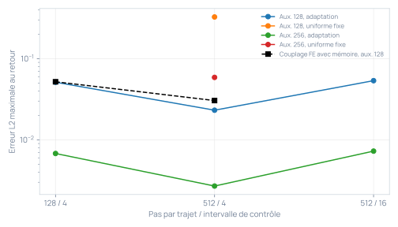
Un premier test supprime toute advection et reconstitue vingt-quatre fois le support à partir du même champ, avec projection entre supports. Il compare 5 et 12 points de Gauss par direction, ainsi qu'un plancher nul ou égal à un millionième de l'énergie marginale moyenne avant la racine quatrième. La surintégration conserve l'intégrale du carré du polynôme mais affine son histogramme spatial. Un déplacement résiduel dans ce test provient de la boucle moniteur-projection.
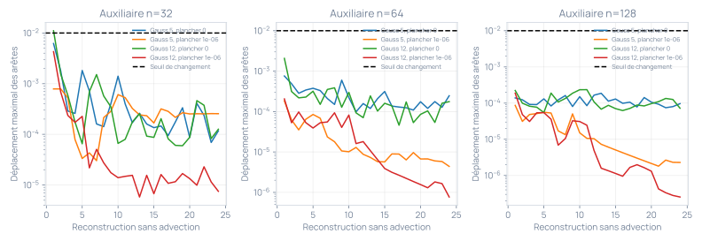
Sur les supports n=64 et n=128, le déplacement maximal dans ce test immobile vaut 0.002068, à comparer au seuil 0,01 du contrôleur. La boucle appliquée au champ initial ne reproduit donc pas à elle seule les grands mouvements observés pendant l'évolution. Ce test ne suffit pas à attribuer leur cause à la quadrature.
L'aller-retour utilise ensuite 128 pas avec contrôle tous les 4 pas, ou 512 pas avec contrôle tous les 4 ou 16 pas. Les réglages (128,4) et (512,16) ont le même intervalle physique entre contrôles. Le champ FE, le support auxiliaire et les huit itérations de transfert de mémoire sont identiques.
| Pas | Intervalle | Gauss | Plancher | Changes | L2 max | Temps (s) |
|---|---|---|---|---|---|---|
| 128 | 4 | 5 | 0 | 63 | 0.0008694 | 17.24 |
| 128 | 4 | 12 | 0 | 63 | 0.0008672 | 17.24 |
| 128 | 4 | 5 | 1e-06 | 62 | 0.00102 | 16.87 |
| 128 | 4 | 12 | 1e-06 | 62 | 0.001009 | 16.94 |
| 512 | 4 | 5 | 0 | 203 | 0.001269 | 54.89 |
| 512 | 4 | 12 | 0 | 203 | 0.001266 | 55.3 |
| 512 | 4 | 5 | 1e-06 | 196 | 0.001354 | 53.02 |
| 512 | 4 | 12 | 1e-06 | 196 | 0.001351 | 53.53 |
| 512 | 16 | 5 | 0 | 63 | 0.0008708 | 17.49 |
| 512 | 16 | 12 | 0 | 63 | 0.000868 | 17.58 |
| 512 | 16 | 5 | 1e-06 | 62 | 0.001023 | 17.18 |
| 512 | 16 | 12 | 1e-06 | 62 | 0.001013 | 17.26 |
Des poids d'énergie positifs sont portés par des points matériels suivis par les caractéristiques. L'incompressibilité conserve ces poids. Ce diagnostic n'utilise aucune évolution FE/DG ni aucun remaillage du champ. Les grands déplacements des partitions sont reproduits à 512 et 1024 points par direction. Décaler la coupure périodique réduit le mouvement des quantiles diagonaux : une part importante du phénomène est géométrique, et non une instabilité de projection.
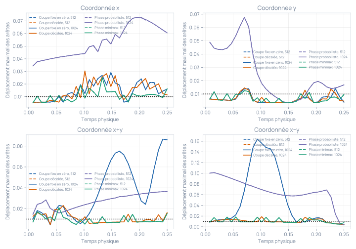
Remplacer l'énergie auxiliaire par celle du champ FE observé laisse pratiquement inchangés le nombre de changements et l'erreur de retour. Le bruit propre à la représentation auxiliaire ne suffit donc pas à expliquer le phénomène.
| Pas | Intervalle | Changements | L2 max |
|---|---|---|---|
| 128 | 4 | 63 | 0.0008729 |
| 512 | 4 | 202 | 0.001273 |
| 512 | 16 | 63 | 0.0008747 |
Un alignement de phase par moindres carrés dans les coordonnées cumulées du moniteur supprime la dépendance à une coupure fixe. Il ne minimise toutefois pas le déplacement maximal des arêtes, qui déclenche ici les changements. Cette première variante ne réduit pas le nombre de remaillages ni l'erreur de retour; elle reste un résultat négatif du contrôleur.
| Pas | Intervalle | Changements | L2 max |
|---|---|---|---|
| 128 | 4 | 63 | 0.001004 |
| 512 | 4 | 255 | 0.001307 |
| 512 | 16 | 63 | 0.001004 |
Une seconde phase minimise directement le plus grand déplacement physique des quantiles pour le nouveau moniteur fixé. La monotonie des quantiles permet de trouver par dichotomie le point où les déplacements extrêmes positifs et négatifs s'équilibrent. Cette optimalité locale ne minimise ni l'erreur du champ ni le nombre futur de changements.
| Pas | Intervalle | Changements minimax | L2 max | Temps (s) |
|---|---|---|---|---|
| 128 | 4 | 47 | 0.001427 | 17.06 |
| 512 | 4 | 59 | 0.001006 | 32.03 |
| 512 | 16 | 47 | 0.001454 | 17.5 |
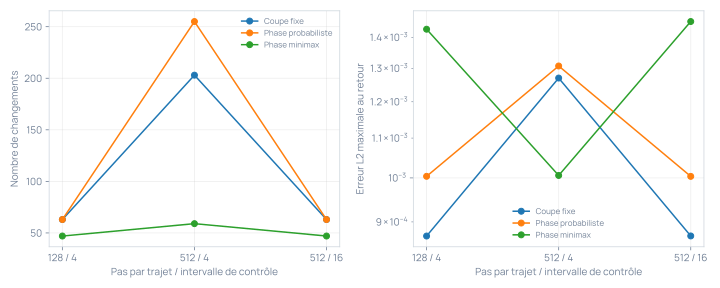
Le filtre polynomial initial démarre de zéro. Même quand l'ancien et le nouveau support coïncident, il multiplie chaque mode de mémoire par un facteur inférieur à un : un nombre fini d'itérations introduit donc un défaut pour une opération géométriquement nulle. Ce défaut est distinct de la stabilité énergétique. Le contrôle ci-dessous utilise des états aléatoires après transport et physique, et calcule leur distance dans un espace ambiant commun.
| Degré | Transfert | Distance au carré | Perte d'énergie |
|---|---|---|---|
| 1 | cold | 0.004596 | 0.02471 |
| 1 | warm | -2.22e-15 | 4.441e-16 |
| 2 | cold | 0.02681 | 0.09344 |
| 2 | warm | 3.553e-15 | 2.665e-15 |
| 4 | cold | 0.07624 | 0.2278 |
| 4 | warm | 2.487e-14 | 1.421e-14 |
Une variante initialise l'itération avec la représentation auxiliaire précédente transférée, puis borne radialement son énergie invisible par celle de l'ancien état. Elle conserve le champ FE et son énergie augmentée, et devient l'identité ambiante à support inchangé. Le facteur dépend de l'état : cette variante est non linéaire, et aucune contraction de la distance entre deux solutions n'est déduite de son seul bilan d'énergie. La correction d'un défaut d'identité ne garantit pas une meilleure erreur physique.
Un contre-exemple GPU dans un espace ambiant de dimension trois confirme cette limite : le rapport de distance entre deux états vaut 1.94528, alors que l'énergie de chaque état reste bornée. La variante n'est donc pas non expansive.
| Pas | Intervalle | Transfert | Changements | L2 max | Temps (s) |
|---|---|---|---|---|---|
| 128 | 4 | projected | 63 | 0.0008701 | 16.8 |
| 128 | 4 | warm | 63 | 0.001044 | 16.98 |
| 512 | 4 | projected | 203 | 0.00127 | 54.56 |
| 512 | 4 | warm | 202 | 0.001246 | 54.63 |
| 512 | 16 | projected | 63 | 0.0008703 | 17.23 |
| 512 | 16 | warm | 63 | 0.0009124 | 17.36 |
L'état précédent transféré est ajouté à un petit espace de Krylov. La projection orthogonale de la mémoire sur son image orthogonale au champ FE se calcule avec une petite matrice de Gram GPU. Elle conserve le champ FE et vérifie une identité de Pythagore : perte d'énergie égale carré du déplacement ambiant. L'espace contient la mémoire entrante lorsque le support est inchangé. Un seuil de rang 10⁻¹² limite ces propriétés en arithmétique flottante. L'augmentation de Krylov est classique; cette réalisation est évaluée ici dans le transfert FE.
| Degré | Défaut observation max | Défaut oracle max | Défaut Pythagore max |
|---|---|---|---|
| 1 | 1.554e-15 | 1.943e-15 | 1.91e-14 |
| 2 | 1.776e-15 | 2.887e-15 | 3.153e-14 |
| 4 | 1.776e-15 | 1.377e-14 | 6.395e-14 |
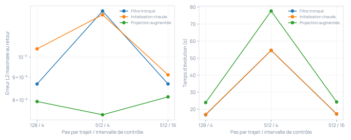
| Pas | Intervalle | Changements | L2 max | Temps (s) |
|---|---|---|---|---|
| 128 | 4 | 63 | 0.0007944 | 23.98 |
| 512 | 4 | 202 | 0.0007418 | 77.67 |
| 512 | 16 | 63 | 0.000814 | 24.33 |
Le sous-espace est construit à partir de chaque champ : le transfert est non linéaire. L'identité de Pythagore ne démontre pas une contraction de la distance entre deux solutions, ni un gain d'erreur pour l'EDP. Les tests de retour servent à examiner ce second point.
Un contre-exemple indépendant en dimension six précise la limite de stabilité. Deux entrées séparées de 1e-7 sont projetées sur des espaces augmentés qui dépendent de l'état. Les sorties peuvent être beaucoup plus éloignées, alors que chaque énergie décroît et que chaque identité de Pythagore est satisfaite. La note donne la construction explicite et les gains limites analytiques. Cette observation exclut une preuve de non-expansivité de ce transfert non linéaire.
| Directions | Rang effectif | Gain de distance | Limite analytique |
|---|---|---|---|
| 1 | 1 | 100 | 100 |
| 3 | 2 | 890 | 890 |
Des points matériels transportent les poids d'énergie de la solution initiale et définissent à l'avance les partitions. Les huit méthodes suivent exactement cette même succession de 63 changements, puis les mêmes opérateurs auxiliaires. Les matrices FE–auxiliaire et les projections entre supports sont construites une seule fois et partagées. La rétroaction du champ calculé sur le maillage est ainsi supprimée de cette comparaison.
À chaque changement, trois mesures partent du même état, après une application de chauffe. Leur médiane inclut le transfert et ses diagnostics. La somme de ces médianes isole le coût des transferts; elle exclut la construction géométrique commune et n'est pas un temps complet de résolution. Les états des méthodes peuvent différer parce que leurs erreurs se sont accumulées.
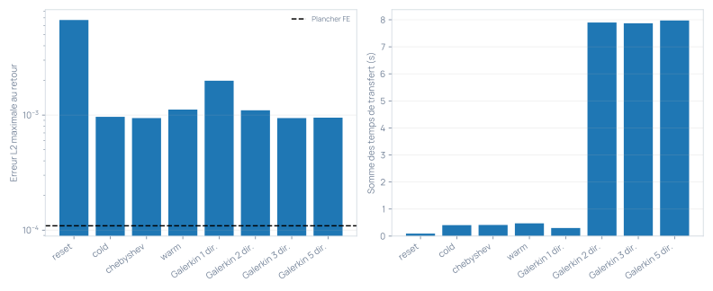
Construction initiale commune : 0.532 s; constructions géométriques communes pendant l'évolution : 16.3 s. Ces coûts restent à payer pour une exécution indépendante.
Les espaces de transfert construits séparément pour chaque champ dépendent du choix de base des composantes. Une variante réunit leurs directions dans un espace partagé et projette tous les champs sur cet espace. Elle préserve le champ FE et l'identité au support inchangé. La perte de la matrice complète des produits scalaires entre champs est positive semi-définie; une rotation orthogonale des composantes produit la même rotation de la sortie. Les preuves, à géométrie et métrique des composantes fixées, sont données dans la note.
| Contrôle GPU, degrés 1, 2 et 4 | Défaut maximal |
|---|---|
| Observation FE | 2.109e-15 |
| Pythagore, matrice complète | 1.492e-13 |
| Rotation des champs, espace partagé | 3.015e-12 |
| Rotation des champs, espaces séparés | 0.2181 |
Le défaut de covariance est ici le maximum absolu des différences de coefficients de l'ancre et du champ auxiliaire après rotation. Les champs de contrôle sont aléatoires; ce résultat teste une propriété algébrique et ne mesure pas une erreur d'EDP. L'espace partagé reste dépendant de l'ensemble des états et ne supprime pas le contre-exemple de stabilité entre entrées distinctes.
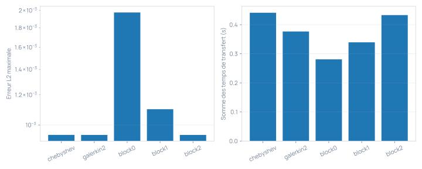
La géométrie commune coûte 0.532 s initialement, puis 18 s pendant le trajet. Ce coût doit être ajouté pour une résolution indépendante.
Le profilage synchronisé identifie la formation des petits produits de Gram comme le surcoût de Galerkin : les contractions emploient une très longue dimension spatiale et peu de colonnes. Une réduction CUDA divise cette somme en blocs de 1024 degrés de liberté, puis réunit les sommes partielles sur GPU. La diagonalisation et le critère de rang restent identiques. Cinq répétitions entrelacées comparent les deux assemblages sur le même état; ces temps concernent un transfert et incluent ses diagnostics.
| Directions/champ | Espace | Initial (ms) | Réduction (ms) | Écart ambiant |
|---|---|---|---|---|
| 1 | séparé | 7.537 | 6.666 | 5.208e-13 |
| 1 | partagé | 156.1 | 6.939 | 1.904e-11 |
| 3 | séparé | 126.9 | 8.084 | 5.88e-12 |
| 3 | partagé | 147.2 | 8.943 | 5.692e-12 |
| 5 | séparé | 128.5 | 9.866 | 5.003e-12 |
| 5 | partagé | 149 | 13.54 | 4.775e-12 |
Les contrôles indépendants comparent les produits pondérés, les rangs retenus, les coefficients et l'état ambiant. Les directions presque nulles peuvent amplifier les différences de coefficients; le fichier brut conserve également la variabilité entre répétitions du calcul initial. Le gain local doit être distingué du temps de construction des supports.
Le noyau précédent évaluait chaque point de quadrature avec une seule voie du warp avant de répartir les entrées de la matrice. Le nouveau noyau prépare 32 points en parallèle dans la mémoire partagée, puis accumule les mêmes produits de bases. La normalisation par les poids de masse est effectuée à la fin de l'intégration. Les intersections, quadratures et espaces polynomiaux restent identiques. L'option tiled est explicite; les campagnes précédentes utilisaient l'ancien constructeur.
Les 24 contrôles comparent le constructeur au noyau scalaire indépendant : degrés 1, 2, 4, partitions uniformes ou périodiques non uniformes, intégrales ordinaires ou pondérées par la réaction, et deux subdivisions de quadrature. L'écart relatif maximal des blocs est 5.72e-15. Les applications et l'adjoint de masse sont également comparés.
| FE n | Aux. n | Ancien (s) | Quadrature parallèle (s) | Rapport | Écart L2 après 16 transports |
|---|---|---|---|---|---|
| 128 | 64 | 0.2607 | 0.03543 | 7.358 | 1.872e-15 |
| 256 | 128 | 0.9222 | 0.1225 | 7.529 | 1.849e-15 |
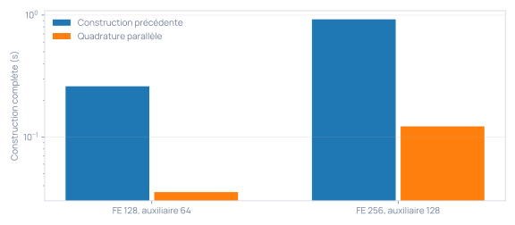
Compute Sanitizer memcheck ne signale aucune erreur sur la validation entière. Le contrôle racecheck ciblant le nouveau noyau ne signale ni erreur ni avertissement. Le contrôle non filtré émet 48 avertissements dans le noyau de scan de CuPy utilisé par nonzero, et aucun dans le nouveau noyau. Les journaux non filtrés et ciblés sont conservés; ces avertissements de bibliothèque ne sont pas présentés comme résolus.
Le retour long utilise FE n = 256, auxiliaire n = 128, quatre champs, deux trajets de durée 1 et 512 pas par trajet. Le coût inclut la préparation du couplage, les contrôles, les changements géométriques et l'évolution. La quadrature d'erreur finale reste hors chronométrage, comme dans la campagne initiale. Les répétitions alternent l'ordre des configurations.
| Construction | Transfert | N | Médiane (s) | Min. (s) | Max. (s) | L2 min. | L2 max. |
|---|---|---|---|---|---|---|---|
| tiled | block | 3 | 57.86 | 57.76 | 57.99 | 0.02348 | 0.02351 |
| tiled | chebyshev | 3 | 55.83 | 55.65 | 55.84 | 0.02868 | 0.02868 |
| tiled | galerkin | 3 | 55.1 | 54.88 | 55.27 | 0.02331 | 0.02332 |
| warp | chebyshev | 3 | 255.8 | 255.7 | 255.9 | 0.02868 | 0.02868 |
| warp | galerkin | 2 | 255.4 | 255.3 | 255.5 | 0.02331 | 0.02331 |
Les réductions atomiques et les petits Grams proches d'un défaut de rang peuvent amplifier les différences d'arrondi dans le calcul adaptatif. Les intervalles d'erreur des répétitions sont donc conservés à côté des temps; un accord à l'arrondi des blocs n'implique pas un accord à l'arrondi du champ après 255 changements non linéaires.
Le changement d'assemblage est ensuite évalué dans le contrôleur adaptatif complet. Les coûts incluent la préparation, les contrôles et toutes les reconstructions géométriques. Les espaces partagés sont comparés aux projections séparées; la métrique d'erreur reste le maximum des quatre erreurs L2 après retour exact.
| FE / auxiliaire | Durée/branche | Pas / contrôle | Mémoire | Changements | L2 max | Coût (s) |
|---|---|---|---|---|---|---|
| 128 / 64 | 0.25 | 128 / 4 | galerkin | 63 | 0.000791 | 18.32 |
| 128 / 64 | 0.25 | 128 / 4 | block | 63 | 0.0007934 | 18.1 |
| 128 / 64 | 0.25 | 512 / 4 | galerkin | 202 | 0.0007402 | 58.11 |
| 128 / 64 | 0.25 | 512 / 4 | block | 202 | 0.0007412 | 58 |
| 128 / 64 | 0.25 | 512 / 16 | galerkin | 63 | 0.0008151 | 18.46 |
| 128 / 64 | 0.25 | 512 / 16 | block | 63 | 0.0008124 | 17.96 |
| 256 / 128 | 1 | 512 / 4 | galerkin | 255 | 0.0233 | 255.2 |
| 256 / 128 | 1 | 512 / 4 | block | 255 | 0.02353 | 257.8 |
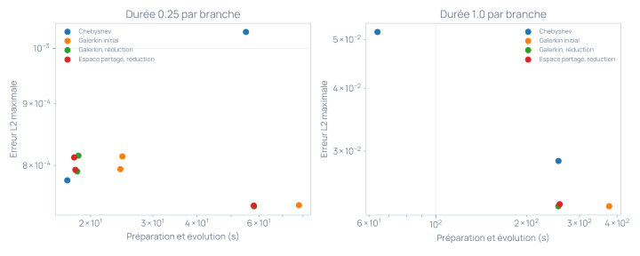
Le système transporte quatre profils et applique la réaction spatiale diagonale de taux (0,5; 1; 2; 4) fois 1+0,5 sin(2πx). Le même problème est résolu après une rotation orthogonale des composantes, où la réaction devient couplée. Les résultats sont ramenés dans la base initiale. Une suite matérielle de supports est imposée à toutes les variantes pour isoler cette propriété du contrôleur. Les demi-pas de réaction sont effectués dans l'espace FE; le transport et la mémoire auxiliaire restent sur GPU.
| FE | Dispersion | Méthode | L2, base initiale | L2, base tournée | Écart entre bases |
|---|---|---|---|---|---|
| 64 | 0.008 | chebyshev | 0.01229 | 0.01229 | 1.279e-13 |
| 64 | 0.008 | galerkin2 | 0.01231 | 0.0123 | 0.0004145 |
| 64 | 0.008 | block2 | 0.0123 | 0.0123 | 1.107e-09 |
| 64 | 0.15 | chebyshev | 0.04667 | 0.04667 | 1.691e-13 |
| 64 | 0.15 | galerkin2 | 0.04674 | 0.04674 | 0.000793 |
| 64 | 0.15 | block2 | 0.04674 | 0.04674 | 4.537e-10 |
| 128 | 0.008 | chebyshev | 0.0002942 | 0.0002942 | 1.277e-13 |
| 128 | 0.008 | galerkin2 | 0.000296 | 0.0002953 | 2.145e-05 |
| 128 | 0.008 | block2 | 0.0002955 | 0.0002955 | 1.244e-10 |
| 128 | 0.15 | chebyshev | 0.004151 | 0.004151 | 1.696e-13 |
| 128 | 0.15 | galerkin2 | 0.004169 | 0.004167 | 0.0001904 |
| 128 | 0.15 | block2 | 0.004169 | 0.004169 | 2.187e-10 |
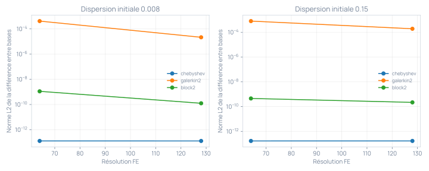
Quatre fractions initialement positives ont une somme exactement égale à un. Elles sont transportées, avec ou sans réaction spatiale d'échange entre espèces définie par le laplacien du graphe cyclique à quatre sommets. Cette réaction conserve la somme. Une projection commune à tous les champs préserve toute relation linéaire dont le second membre appartient à l'espace FE; elle doit donc conserver cette fermeture jusque dans la mémoire auxiliaire. La positivité des fractions reste un contrôle séparé.
| FE / auxiliaire | Réaction | Méthode | L2 max | Fermeture FE | Fermeture auxiliaire | Masse totale |
|---|---|---|---|---|---|---|
| 64 / 32 | non | chebyshev | 2.174e-05 | 1.726e-13 | 1.843e-13 | 7.55e-14 |
| 64 / 32 | non | galerkin2 | 2.199e-05 | 9.202e-07 | 6.651e-07 | 7.55e-14 |
| 64 / 32 | non | block2 | 2.196e-05 | 1.67e-13 | 1.554e-13 | 7.55e-14 |
| 64 / 32 | oui | chebyshev | 1.145e-05 | 5.904e-13 | 4.975e-13 | 4.654e-13 |
| 64 / 32 | oui | galerkin2 | 1.156e-05 | 5.893e-07 | 3.997e-07 | 4.65e-13 |
| 64 / 32 | oui | block2 | 1.155e-05 | 5.881e-13 | 4.88e-13 | 4.652e-13 |
| 128 / 64 | non | chebyshev | 1.096e-06 | 2.791e-13 | 2.86e-13 | 7.483e-14 |
| 128 / 64 | non | galerkin2 | 1.094e-06 | 3.744e-08 | 2.048e-08 | 7.461e-14 |
| 128 / 64 | non | block2 | 1.094e-06 | 2.76e-13 | 2.599e-13 | 7.461e-14 |
| 128 / 64 | oui | chebyshev | 5.893e-07 | 6.333e-13 | 5.465e-13 | 4.681e-13 |
| 128 / 64 | oui | galerkin2 | 5.89e-07 | 1.895e-08 | 9.032e-09 | 4.676e-13 |
| 128 / 64 | oui | block2 | 5.889e-07 | 6.377e-13 | 5.355e-13 | 4.681e-13 |


La cohérence des fractions de mélange est une exigence déjà traitée, notamment par Plewa et Müller dans la méthode CMA. L'expérience examine ici sa conservation dans un couplage FE à mémoire cachée et supports variables; elle ne revendique pas l'invention de cette contrainte.
Une réaction scalaire uniforme de taux κ commute avec l'advection et multiplie toute la solution par exp(−κT). Le couplage FE initial applique la réaction à l'observation et conserve la composante orthogonale. Il est contractant, mais ne reproduit pas nécessairement cette décroissance physique. Une extension impose q nouveau = G(v) + γ(q−v), avec γ = exp(−κΔt) pour un sous-pas de réaction uniforme. Son énergie est exactement la somme de l'énergie FE après physique et de γ² fois l'énergie cachée initiale.
Le contrôle conserve un support auxiliaire uniforme fixe et utilise le même transport numérique sans réaction comme référence de commutation. Les erreurs physiques sont aussi comparées à une référence caractéristique indépendante. Les erreurs divisées par exp(−κT) exposent les écarts que masquerait une solution presque nulle. Cette extension est exacte pour une réaction uniforme; une physique générale requiert un modèle spécifique pour les sous-échelles.
| Taux κ | Amortissement | Écart de commutation / exp(−κT) | Erreur L2 physique |
|---|---|---|---|
| 1 | FE | 9.566e-05 | 0.002906 |
| 1 | FE et mémoire | 1.941e-14 | 0.002907 |
| 10 | FE | 0.001027 | 0.0003164 |
| 10 | FE et mémoire | 2.798e-14 | 0.0003064 |
| 100 | FE | 2.471e+04 | 3.432e-07 |
| 100 | FE et mémoire | 3.113e-15 | 5.183e-14 |
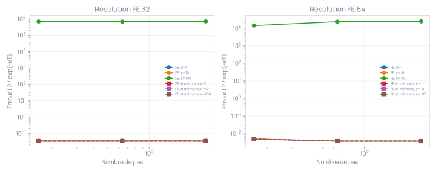
Pour la réaction de taux κ(1 + 0,5 sin(2πx)), amortir uniformément la mémoire à la vitesse minimale assure une borne d'énergie, mais ne décrit pas son évolution spatiale. La nouvelle opération calcule les moments FE et auxiliaires de gq, où g est l'exponentielle physique de la réaction et q le champ complet. Trois blocs de masse pondérés suffisent : FE–FE, FE–auxiliaire et auxiliaire–auxiliaire. La projection dans trois directions cachées conserve exactement les moments FE de gq et possède une identité de Pythagore, sous les hypothèses de quadrature et de rang de la note théorique.
Le test conserve le même transport cellulaire, le même maillage FE P4 gradué et un support auxiliaire uniforme fixe, deux fois plus fin dans chaque direction. Le temps final est 0,25. La référence par caractéristiques est indépendante; l'écart entre 512 et 1024 sous-pas de référence est inférieur à 3 × 10⁻¹¹ relativement au maximum de la référence. Les erreurs sont divisées par sa norme L2 finale : pour κ = 100 cette norme vaut seulement 4,20 × 10⁻¹⁴. Les écarts relatifs très élevés des modèles incomplets décrivent donc des résidus faibles en valeur absolue, mais très supérieurs au champ physique attendu.
| FE n | Modèle | L2 physique | L2 relative | Plancher relatif | Évolution (s) |
|---|---|---|---|---|---|
| 32 | Réaction FE | 7.012e-06 | 1.668e+08 | 0.02895 | 0.1614 |
| 32 | Mémoire amortie | 4.046e-11 | 962.3 | 0.02895 | 0.2003 |
| 32 | Moments complets | 1.249e-15 | 0.0297 | 0.02895 | 2.037 |
| 64 | Réaction FE | 2.546e-07 | 6.055e+06 | 0.002371 | 0.1771 |
| 64 | Mémoire amortie | 1.376e-12 | 32.73 | 0.002371 | 0.2385 |
| 64 | Moments complets | 1.009e-16 | 0.0024 | 0.002371 | 2.203 |
| 128 | Réaction FE | 8.55e-09 | 2.033e+05 | 0.0001375 | 0.6857 |
| 128 | Mémoire amortie | 4.377e-14 | 1.041 | 0.0001375 | 0.7246 |
| 128 | Moments complets | 5.826e-18 | 0.0001386 | 0.0001375 | 6.887 |
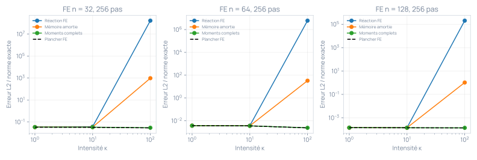
Une ablation remplace l'exponentielle du générateur FE par la projection FE de l'exponentielle physique, sans traiter spatialement la mémoire. Sur les 24 essais, cette modification change les erreurs relatives d'au plus 7.68e-07 en proportion : elle n'explique pas le gain de la nouvelle opération. Les temps sont ceux d'une exécution par configuration. La construction des masses pondérées ajoute environ 0,5 s pour n = 64 et 1,8 s pour n = 128; les moments complets coûtent davantage par pas que les deux modèles incomplets.
Les 18 contrôles denses GPU aux degrés 1, 2 et 4 vérifient les Grams pondérés, la limite de réaction uniforme, l'observation FE et Pythagore. Le défaut de Pythagore maximal est 8.88e-15; la variation maximale du Gram à la subdivision de quadrature est 1.71e-12. Compute Sanitizer ne signale aucune erreur sur cette validation.
Sur l'EDP à κ = 100, n = 64 et 256 pas, doubler les subdivisions des intégrales pondérées change l'erreur relative de 2.91e-13 en valeur absolue.
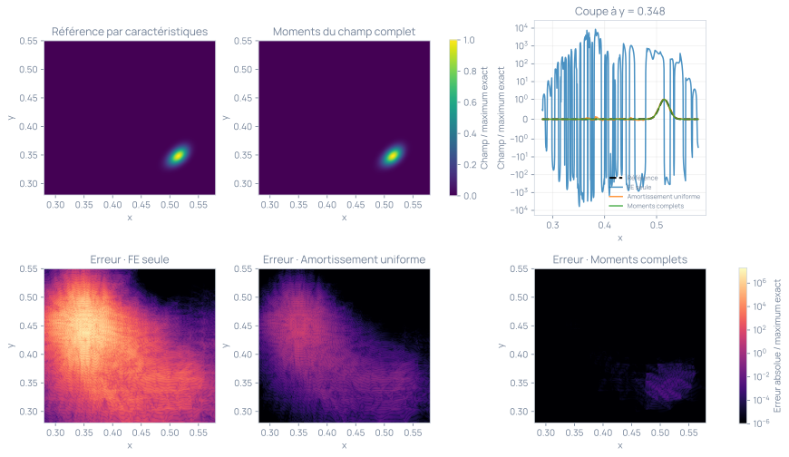
L'extension utilise la réaction κ(1 + 0,5 sin(2πx)) B, où B est le Laplacien d'un cycle à quatre espèces. Son spectre 0, 2, 2, 4 sépare un mode conservé et trois modes dissipatifs. Les blocs de moments pondérés sont réutilisés pour les valeurs propres répétées; une seule projection spatiale partagée traite les quatre composantes. La somme des fractions est un invariant de la réaction et du transport.
Pour mesurer correctement l'approche d'un équilibre non nul, le calcul évolue les écarts à (1/4, 1/4, 1/4, 1/4). Leur somme initiale est nulle. La référence et le plancher FE sont calculés directement sur ces écarts, sans soustraction de deux références proches de 1/4. L'erreur relative utilise la norme finale de l'écart à l'équilibre. Les comparateurs traitent soit la seule observation FE, soit cette observation et un amortissement uniforme spécifique à chaque mode dissipatif.
| κ | Modèle | L2 relative | Plancher relatif | Défaut de somme L2 | Évolution (s) |
|---|---|---|---|---|---|
| 1 | FE seule | 0.0005689 | 0.0005684 | 2.132e-16 | 0.5226 |
| 1 | Mémoire amortie par mode | 0.0005687 | 0.0005684 | 2.143e-16 | 0.8855 |
| 1 | Moments complets partagés | 0.0005687 | 0.0005684 | 3.28e-14 | 4.997 |
| 10 | FE seule | 0.0008425 | 0.0006245 | 3.689e-17 | 0.5225 |
| 10 | Mémoire amortie par mode | 0.0006304 | 0.0006245 | 3.709e-17 | 0.8853 |
| 10 | Moments complets partagés | 0.0006248 | 0.0006245 | 1.018e-14 | 4.981 |
| 20 | FE seule | 0.07698 | 0.0007798 | 1.828e-17 | 0.5229 |
| 20 | Mémoire amortie par mode | 0.001143 | 0.0007798 | 1.852e-17 | 0.8861 |
| 20 | Moments complets partagés | 0.0007801 | 0.0007798 | 1.137e-15 | 4.983 |
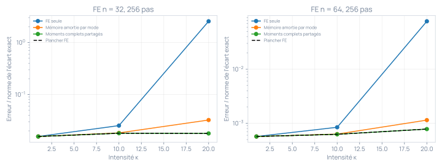
Les 18 contrôles denses donnent un écart de covariance maximal de 2.84e-14 pour la projection partagée, contre 0.116 pour les projections séparées. Le défaut de somme dans le champ auxiliaire atteint 0.0271 avec les projections séparées, contre 2.75e-15 avec l'espace partagé. Les deux variantes ont pourtant la même observation FE immédiate à la précision des arrondis. Compute Sanitizer ne signale aucune erreur sur ces contrôles.
Dans les 36 essais d'EDP, le défaut maximal de somme FE est 3.28e-14. Les fractions échantillonnées restent positives, avec un minimum de 0.222; aucune garantie générale de positivité n'en découle. Cette expérience porte sur une matrice de réaction symétrique constante multipliée par un taux spatial, et ne couvre pas un réseau chimique non linéaire général.
Un oracle supplémentaire résout par diagonalisation GPU le Gram conjoint complet de V et W, avec un seuil relatif de rang de 10⁻¹². Il est comparé aux petits espaces cachés sur des états aléatoires à quatre composantes. Ce contrôle mesure la perte de projection pour une réaction seule; il ne mesure pas une erreur d'EDP. La référence complète est elle-même soumise au seuil de rang.
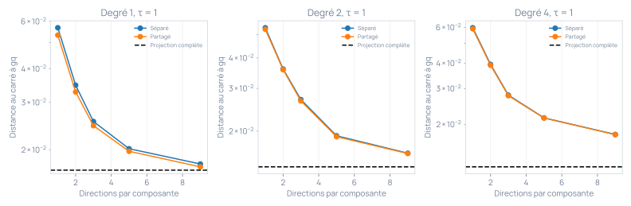
Deux variantes remplacent le moment h servant à générer les directions par h − Kd, ou par h − σKd avec σ ajusté au mieux dans la direction entrante. La projection finale conserve sa définition orthogonale. Le deuxième choix utilise un seul coefficient commun lorsque les champs partagent l'espace, afin de préserver la covariance des composantes. Les contrôles locaux de réaction montrent des réductions de distance au champ cible; elles ne se traduisent pas par un avantage systématique sur le retour avec supports mobiles.
| T aller | Pas | Contrôle | Direction | L2 maximale | Évolution (s) |
|---|---|---|---|---|---|
| 0.25 | 128 | 4 | moment | 0.0007912 | 4.004 |
| 0.25 | 128 | 4 | increment | 0.000972 | 3.998 |
| 0.25 | 128 | 4 | residual | 0.0007846 | 4 |
| 0.25 | 512 | 4 | moment | 0.0007396 | 13.14 |
| 0.25 | 512 | 4 | increment | 0.001022 | 13.19 |
| 0.25 | 512 | 4 | residual | 0.0007609 | 13.2 |
| 0.25 | 512 | 16 | moment | 0.0008139 | 4.418 |
| 0.25 | 512 | 16 | increment | 0.0009851 | 4.419 |
| 0.25 | 512 | 16 | residual | 0.0007956 | 4.433 |
| 1 | 512 | 4 | moment | 0.02332 | 54.68 |
| 1 | 512 | 4 | increment | 0.0234 | 54.87 |
| 1 | 512 | 4 | residual | 0.02337 | 54.98 |
Une autre variante calcule les moments de (g−1)q avec expm1, projette cet incrément et l'ajoute à l'état précédent. En arithmétique exacte, cette opération équivaut à projeter gq si l'ancien état appartient à l'espace retenu. La troncature numérique du Gram peut supprimer cette condition. Le calcul local du défaut est néanmoins très précis : sur 36 contrôles denses, jusqu'à un sous-pas de 10⁻¹², l'oracle indépendant retrouve l'énergie et le défaut de l'incrément avec une erreur relative inférieure à 2 × 10⁻¹⁴; le sous-pas nul conserve les coefficients bit à bit.
| FE n | Opération | Erreur relative | Plancher FE |
|---|---|---|---|
| 64 | ambient-moments | 0.0024 | 0.002371 |
| 128 | ambient-moments | 0.0001386 | 0.0001375 |
| 64 | increment-moments | 0.008973 | 0.002371 |
| 128 | increment-moments | 4071 | 0.0001375 |
| 64 | increment-reanchor | 0.002399 | 0.002371 |
| 128 | increment-reanchor | 0.0001386 | 0.0001375 |
La mise à jour additive échoue pourtant lors de la réaction forte répétée. Les coefficients de l'ancre FE et du détail auxiliaire restent grands alors que leur somme physique devrait presque s'annuler. Le bilan d'énergie obtenu par différence perd alors lui-même des chiffres significatifs. Une variante utilisant les mêmes moments d'incrément, mais projetant à nouveau le champ complet, retrouve le niveau d'erreur de la méthode initiale. Cette variante remet les coefficients à l'échelle du champ qui subsiste et supprime les directions rejetées par le Gram.
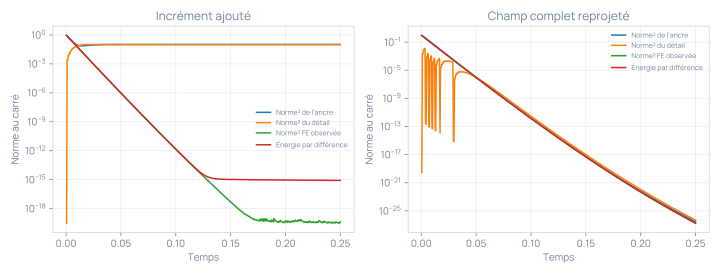
Ce résultat négatif interdit d'assimiler automatiquement une formule stable pour le défaut local à une évolution robuste. L'identité de projection et la coercivité pure demandent que l'ancienne composante cachée soit retenue; la note explicite le terme supplémentaire lorsque cette hypothèse est perdue. La projection du champ complet reste la méthode de référence.
La projection enrichie et la minimisation du déplacement périodique sont ensuite utilisées ensemble. Les essais courts reprennent les trois fréquences de contrôle. Deux essais plus longs sur FE n=256 et auxiliaire n=128 comparent la projection enrichie avec coupure fixe et avec phase minimax. Les ingrédients ont des contrôles séparés; cette campagne examine leur interaction.
| T aller | FE n | Phase | Pas / contrôle | Changements | L2 max | Temps (s) |
|---|---|---|---|---|---|---|
| 0.25 | 128 | minimax | 128 / 4 | 47 | 0.001241 | 23.73 |
| 0.25 | 128 | minimax | 512 / 4 | 58 | 0.001134 | 40.25 |
| 0.25 | 128 | minimax | 512 / 16 | 47 | 0.001298 | 23.99 |
| 1 | 256 | fixe | 512 / 4 | 255 | 0.02332 | 376.5 |
| 1 | 256 | minimax | 512 / 4 | 226 | 0.02527 | 360.1 |
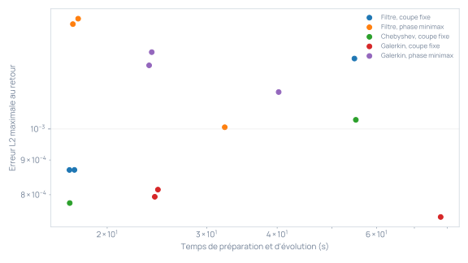
Le gain obtenu par Galerkin face au filtre tronqué à 512 pas ne suffit pas à établir un avantage de coût : Chebyshev à 128 pas donne déjà une erreur proche avec beaucoup moins de contrôles. Les paramètres de transport et d'adaptation doivent être optimisés ensemble avant une comparaison à précision imposée.
Le contrôleur propose les mêmes partitions d'énergie, puis réduit leur déplacement par facteurs de deux jusqu'à respecter un budget de distance de mémoire. La projection augmentée relie cette distance à la perte d'énergie. Le budget total est réparti entre les occasions de changement; neuf essais au plus sont autorisés, après quoi l'ancien support est conservé. Une marge empirique pour les arrondis accompagne le diagnostic.
Dans le modèle ambiant exact, la somme des distances de compression borne leur effet cumulé pour la même suite d'opérateurs de transport figée. Ce budget ne borne pas l'erreur totale vis-à-vis de l'EDP. En particulier, ralentir le maillage peut augmenter l'erreur du transport; les courbes examinent ce compromis.
L'allocation uniforme échoue dans ces essais : elle peut empêcher tous les changements et laisser un budget inutilisé, avec une erreur physique finale élevée. Le contrôle du défaut de compression seul ne sélectionne donc pas un support adapté à l'advection.
Une ablation autorise chaque changement à utiliser toute la fraction encore disponible du budget total. Elle isole le rôle de l'allocation uniforme; le même suivi de la somme des distances est conservé.
| Allocation | Pas / contrôle | Budget | Dépensé | Changements | Essais | L2 max | Temps (s) |
|---|---|---|---|---|---|---|---|
| uniform | 128 / 4 | 0.003 | 0 | 0 | 567 | 0.5718 | 206 |
| uniform | 128 / 4 | 0.01 | 0.0002906 | 2 | 561 | 0.5634 | 204 |
| uniform | 128 / 4 | 0.03 | 0.01058 | 34 | 341 | 0.2215 | 124.6 |
| uniform | 512 / 16 | 0.01 | 0.0002947 | 2 | 562 | 0.5671 | 204.4 |
| remaining | 128 / 4 | 0.01 | 0.009988 | 30 | 335 | 0.284 | 122.6 |
| remaining | 128 / 4 | 0.03 | 0.02364 | 63 | 63 | 0.0007918 | 24.14 |
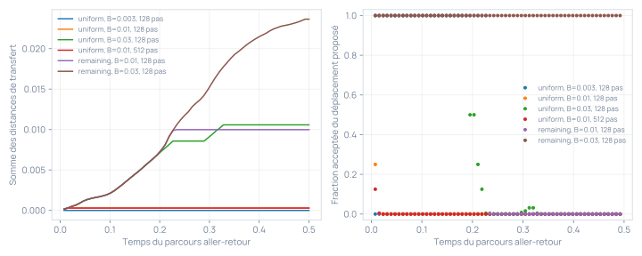
Une nouvelle bosse centrée en (0,8; 0,75) est ajoutée par une source FE impulsionnelle à t=0,125, après un début de transport d'une autre bosse. Le maillage triangulaire est perturbé, sans graduation. L'adaptation compare l'énergie de l'état auxiliaire à celle du champ FE observé. Le second moniteur peut voir une structure créée par la physique FE avant qu'elle soit bien représentée dans l'auxiliaire. La référence transporte séparément les deux profils analytiques.
La source injecte de l'énergie. Son travail est mesuré par la différence d'énergie FE, et l'identité entre ce travail et la variation de l'énergie augmentée est contrôlée. Le bilan de masse ajoute la masse de la source. Une contraction globale n'est pas revendiquée à travers cette impulsion.
| FE n | Aux. n | Largeur | Moniteur | L2 | Plancher FE |
|---|---|---|---|---|---|
| 128 | 32 | 0.003 | auxiliary | 0.0818 | 0.03284 |
| 128 | 32 | 0.003 | fe | 0.03406 | 0.03284 |
| 128 | 32 | 0.006 | auxiliary | 0.003358 | 0.001243 |
| 128 | 32 | 0.006 | fe | 0.003001 | 0.001243 |
| 128 | 64 | 0.003 | auxiliary | 0.03355 | 0.03284 |
| 128 | 64 | 0.003 | fe | 0.03354 | 0.03284 |
| 128 | 64 | 0.006 | auxiliary | 0.001366 | 0.001243 |
| 128 | 64 | 0.006 | fe | 0.001362 | 0.001243 |
| 256 | 32 | 0.003 | auxiliary | 0.0767 | 0.001572 |
| 256 | 32 | 0.003 | fe | 0.005019 | 0.001572 |
| 256 | 32 | 0.006 | auxiliary | 0.00337 | 5.457e-05 |
| 256 | 32 | 0.006 | fe | 0.003038 | 5.457e-05 |
| 256 | 64 | 0.003 | auxiliary | 0.001711 | 0.001572 |
| 256 | 64 | 0.003 | fe | 0.001681 | 0.001572 |
| 256 | 64 | 0.006 | auxiliary | 0.0004428 | 5.457e-05 |
| 256 | 64 | 0.006 | fe | 0.000418 | 5.457e-05 |
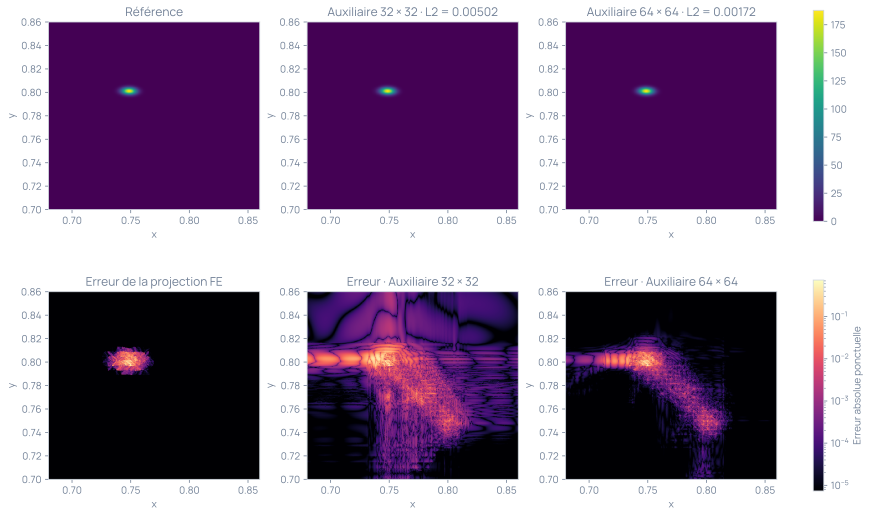
Un raffinement emboîté peut être déclenché par la part de la source FE absente de l'auxiliaire. Après le changement de partition à l'injection, le diagnostic est la racine de la différence entre l'énergie FE de la source et l'énergie de sa projection auxiliaire. Les intervalles sont bisectés jusqu'à satisfaction du seuil ou épuisement du budget n=128. La mémoire est transférée par l'injection emboîtée, dont la perte d'énergie est contrôlée. Ce seuil porte sur la source projetée à cet instant; il ne borne pas l'erreur EDP finale.
| Largeur | Aux. initial | Aux. final | Seuil | Atteint | L2 max | Temps (s) |
|---|---|---|---|---|---|---|
| 0.003 | 32 | 32 | 0.002 | oui | 0.005018 | 15.04 |
| 0.003 | 32 | 128 | 0.0002 | oui | 0.001895 | 24.07 |
| 0.006 | 32 | 32 | 0.002 | oui | 0.003039 | 15.7 |
| 0.006 | 32 | 64 | 0.0002 | oui | 0.0009983 | 18.66 |
| 0.003 | 128 | 128 | n/a | fixe | 0.001608 | 29.11 |
| 0.006 | 128 | 128 | n/a | fixe | 8.364e-05 | 31.19 |
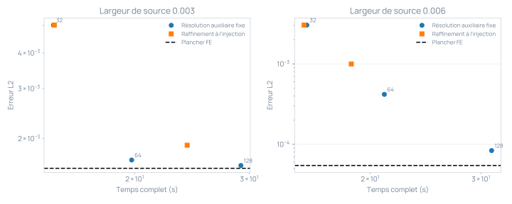
Une diffusion SIPG est assemblée sur les triangles perturbés DG P4. Chaque demi-pas Crank–Nicolson est résolu par gradient conjugué préconditionné sur GPU; les blocs de raideur et le préconditionneur diagonal sont réutilisés. Le transport intermédiaire est une translation périodique de vitesse (1; 0,37). Une solution analytique de l'équation advection–chaleur fournit la référence à t=0,23, avec diffusivité 0,002. Le contrôle efface la mémoire après chaque transport.
L'opérateur symétrique, son noyau constant, son spectre et la résolution CN sont contrôlés sur de petits maillages par diagonalisation GPU indépendante du solveur itératif. La pénalité vaut huit fois (p+1) au carré, multiplié par l'inverse de la plus petite hauteur adjacente. Ces contrôles ne constituent pas une preuve de coercivité pour des maillages arbitraires. L'ordre deux de CN ne suffit pas à établir celui du couplage avec projections.
Un contrôle sans advection vérifie aussi la décroissance analytique du mode cos(2πx) sin(2πy), jusqu'à t=0,2 avec 32 pas CN. Ce test contrôle le signe et la normalisation de la diffusion indépendamment du transfert semi-lagrangien.
| FE n | Erreur L2 chaleur seule | Plancher FE |
|---|---|---|
| 8 | 2.877e-05 | 1.734e-05 |
| 16 | 9.014e-07 | 5.192e-07 |
| 32 | 2.857e-08 | 1.682e-08 |
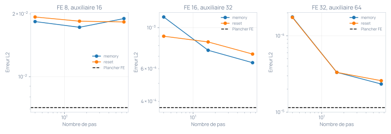
| FE n | Champs | Pas | Méthode | L2 max | CG max | Temps (s) |
|---|---|---|---|---|---|---|
| 8 | 1 | 4 | memory | 0.01836 | 116 | 0.3494 |
| 8 | 1 | 4 | reset | 0.01932 | 116 | 0.3279 |
| 8 | 1 | 16 | memory | 0.01725 | 61 | 0.6287 |
| 8 | 1 | 16 | reset | 0.01844 | 61 | 0.6391 |
| 8 | 1 | 64 | memory | 0.01898 | 29 | 1.237 |
| 8 | 1 | 64 | reset | 0.01829 | 29 | 1.26 |
| 16 | 1 | 4 | memory | 0.001142 | 192 | 0.5599 |
| 16 | 1 | 4 | reset | 0.0008988 | 193 | 0.5524 |
| 16 | 1 | 16 | memory | 0.0007547 | 114 | 1.181 |
| 16 | 1 | 16 | reset | 0.0008371 | 114 | 1.191 |
| 16 | 1 | 64 | memory | 0.0006467 | 58 | 2.381 |
| 16 | 1 | 64 | reset | 0.0007199 | 58 | 2.417 |
| 32 | 1 | 4 | memory | 0.0001763 | 319 | 0.9579 |
| 32 | 1 | 4 | reset | 0.0001741 | 319 | 0.9568 |
| 32 | 1 | 16 | memory | 3.324e-05 | 186 | 2.007 |
| 32 | 1 | 16 | reset | 3.321e-05 | 187 | 2.008 |
| 32 | 1 | 64 | memory | 2.336e-05 | 108 | 4.444 |
| 32 | 1 | 64 | reset | 2.583e-05 | 108 | 4.488 |
| 32 | 4 | 16 | memory | 5.26e-05 | 204 | 7.982 |
| 32 | 4 | 16 | reset | 5.238e-05 | 204 | 8.045 |
Résidu relatif maximal des résolutions : 2e-12. Écart absolu maximal de masse : 8.38e-13. Le maximum du rapport d'énergie augmentée observé après un pas vaut 0.991096. Les temps comprennent un assemblage par cas; aucun graphe CUDA ni solveur multi-second-membre n'est employé pour CG.
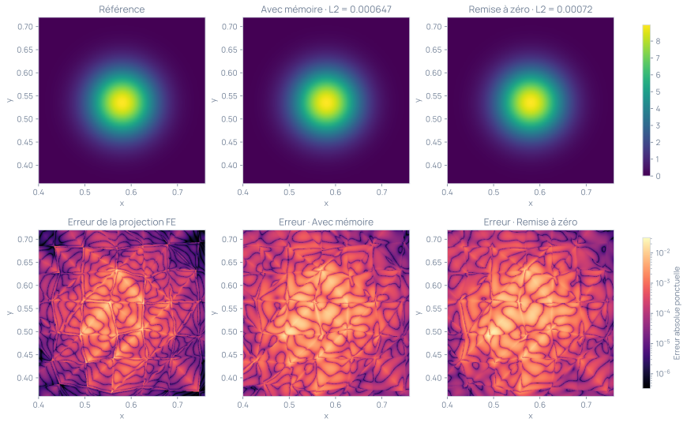
Une fonction de courant somme de produits a(y)b(x) transforme l'advection en somme de commutateurs de cisaillements. Le prototype réutilise une formule publiée de Casas, Escorihuela-Tomàs et Moreno Casares (2025), PCP16. Ses seize cisaillements Fourier sont unitaires; son ordre cinq dans la racine du pas correspond à l'ordre deux dans le temps physique, à grille fixée. Les coefficients et cette théorie de composition sont attribués aux auteurs. L'intérêt recherché ici est une extension des vitesses admissibles dans le couplage FE, dont la nouveauté et l'avantage de coût ne sont pas établis.
Les tests emploient un ou deux tourbillons gaussiens périodiques, dont la fonction de courant possède de nombreux modes de Fourier mais peu de produits séparables. Un oracle matriciel GPU contrôle le commutateur, l'unitarité, les constantes, l'inverse et le défaut temporel. Une intégration indépendante de caractéristiques contrôle l'erreur physique. Une erreur nodale RMS est distinguée de l'erreur FE intégrée.
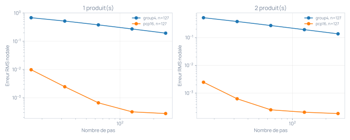
| Produits | FE n | Pas | L2 FE | Plancher FE |
|---|---|---|---|---|
| 1 | 32 | 32 | 0.006844 | 0.005715 |
| 1 | 32 | 128 | 0.006403 | 0.005715 |
| 1 | 32 | 512 | 0.006401 | 0.005715 |
| 1 | 64 | 32 | 0.002492 | 0.000501 |
| 1 | 64 | 128 | 0.0005395 | 0.000501 |
| 1 | 64 | 512 | 0.0005217 | 0.000501 |
| 2 | 32 | 32 | 0.006035 | 0.005561 |
| 2 | 32 | 128 | 0.006008 | 0.005561 |
| 2 | 32 | 512 | 0.006008 | 0.005561 |
| 2 | 64 | 32 | 0.0007044 | 0.0003857 |
| 2 | 64 | 128 | 0.0004009 | 0.0003857 |
| 2 | 64 | 512 | 0.0003996 | 0.0003857 |
Le vortex comporte un facteur exponentiel en cos(2π(x+y)), donc une séparation de rang fini n'est plus prescrite. Une SVD GPU de la fonction de courant sélectionne un préfixe selon l'erreur L2 de vitesse spectrale. L'orthogonalité permet de sommer exactement les énergies des termes rejetés. Ce choix ne minimise pas le rang en norme H1. Le comparateur Fourier utilise la forme antisymétrique de l'advection et RK4, avec un pas borné par la norme de son générateur. Les deux chemins utilisent des graphes CUDA et les mêmes grilles.

| Grille | Méthode | Rang | Pas | Erreur vitesse | L2 champ | Temps (s) |
|---|---|---|---|---|---|---|
| 127 | pcp16 | 4 | 64 | 0.0004091 | 0.01354 | 0.3958 |
| 127 | pcp16 | 4 | 256 | 0.0004091 | 0.01338 | 0.8027 |
| 127 | pcp16 | 7 | 64 | 4.18e-06 | 0.003493 | 0.4507 |
| 127 | pcp16 | 7 | 256 | 4.18e-06 | 0.002914 | 1.487 |
| 127 | pcp16 | 11 | 64 | 2.247e-08 | 0.003491 | 0.7156 |
| 127 | pcp16 | 11 | 256 | 2.247e-08 | 0.002911 | 2.334 |
| 255 | pcp16 | 4 | 64 | 0.0004091 | 0.01309 | 0.5336 |
| 255 | pcp16 | 4 | 256 | 0.0004091 | 0.01306 | 1.731 |
| 255 | pcp16 | 7 | 64 | 4.18e-06 | 0.0001535 | 0.8715 |
| 255 | pcp16 | 7 | 256 | 4.18e-06 | 9.78e-05 | 3.151 |
| 255 | pcp16 | 11 | 64 | 2.247e-08 | 0.0001139 | 1.393 |
| 255 | pcp16 | 11 | 256 | 2.247e-08 | 7.658e-06 | 5.073 |
| 127 | rk4 | — | 101 | — | 0.002276 | 0.07404 |
| 127 | rk4 | — | 202 | — | 0.002277 | 0.1014 |
| 255 | rk4 | — | 204 | — | 5.284e-07 | 0.1428 |
| 255 | rk4 | — | 407 | — | 4.806e-07 | 0.2547 |
Sur ce vortex résolu, Fourier/RK4 donne une erreur 5.284e-07 en 0.1428 s, contre 7.658e-06 en 5.073 s pour PCP16. Le second coûte 35.5 fois plus et reste moins précis dans cette comparaison. Les 336 cisaillements par pas rendent cette compression SVD non compétitive ici. Sa conservation d'énergie ne suffit pas à justifier sa poursuite comme voie de performance prioritaire.
Le flot exact de la vitesse (0,2 sin(2πx), 0) transporte une densité jusqu'à t=1. La référence comprend le Jacobien inverse : l'équation conservative diffère ici de l'équation advective. Les intervalles de départ sont découpés aux préimages des arêtes d'arrivée avant quadrature de Gauss. Les matrices unidimensionnelles sont construites et appliquées sur GPU. Un raffinement de quadrature 16 vers 32 contrôle cette intégration non polynomiale; un calcul de valeurs singulières vérifie la borne de croissance dans la norme de masse sur le petit cas de contrôle.
Le couplage conserve le défaut FE initial tandis que le support DG évolue. Le contrôle remet la mémoire à zéro après chaque pas. La masse doit rester constante; l'énergie augmentée peut croître physiquement, avec une borne exp(2π × 0,2 × t) sur son rapport. Les maillages FE sont perturbés. Cette construction traite un flot séparable exact; une vitesse compressible FE générale n'est pas couverte.

Sur les 32 cas enregistrés, l'écart absolu maximal de masse vaut 8.47e-15; le rapport d'énergie maximal vaut 2.91183, pour une borne physique 3.51359.
| Degré | Raffinement | Défaut Gram | Défaut observation |
|---|---|---|---|
| 1 | global | 1.221e-15 | 6.661e-16 |
| 1 | local | 7.772e-16 | 5.551e-16 |
| 2 | global | 2.22e-15 | 1.11e-15 |
| 2 | local | 1.665e-15 | 1.221e-15 |
| 4 | global | 4.219e-15 | 3.386e-15 |
| 4 | local | 4.108e-15 | 3.209e-15 |
Le premier contrôleur raffine selon la partie du générateur FE non représentée par le support. Les sélections par énergie et par détail hiérarchique atteignent toutes deux la limite de 96 intervalles dès le deuxième contrôle. L'erreur finale reste proche de 0,148. La conservation de l'énergie lors du raffinement ne répare donc pas ce contrôleur : le budget est épuisé tôt, et aucun déraffinement ne libère les cellules derrière la structure. L'indicateur utilisé ne mesure qu'un terme du défaut de consistance.

Une identité permet de dépasser la seule décroissance d'énergie. Si le transfert conserve l'observation FE et diminue l'énergie augmentée, sa distance à toute référence FE minimale diminue exactement de l'énergie dissipée, en norme au carré. Cette propriété reste vraie lorsque l'espace de compression dépend de l'état. Elle n'affirme pas la contraction entre deux états possédant des mémoires différentes et ne contredit donc pas le contre-exemple précédent.
La preuve résulte du développement des deux normes et de la conservation du terme croisé avec la référence. Si l'évolution entre transferts est non expansive entre deux états, la récurrence borne l'erreur finale par l'erreur initiale et la somme des défauts locaux de transport. Aucun terme supplémentaire proportionnel au nombre de changements de support n'apparaît. Les supports réalisés modifient cependant ces défauts : cette borne ne rend pas le choix du maillage indifférent.
| Contrôles GPU | Défaut relatif d'identité | Excès relatif de distance |
|---|---|---|
| 135 | 9.656e-16 | 1.843e-16 |
Les contrôles utilisent une réalisation dense indépendante de l'espace augmenté, les degrés FE 1, 2 et 4, trois mouvements, cinq transferts et trois références d'amplitudes différentes. Une borne de convergence en fonction du pas et des maillages requiert encore une estimation des défauts locaux des noyaux de transport.
Une seconde réalisation remplace les différences de normes mal conditionnées par une somme de deux normes positives. Elle construit un réflecteur orthogonal à partir du graphe de R, la projection FE vers le support auxiliaire. Les seules inversions portent sur I+R*R, dont le spectre appartient à [1,2]. Le transfert obtenu est linéaire et contractant pour des supports prescrits; il préserve l'observation FE et devient l'identité à support inchangé.
Cette construction change l'injection FE : son premier bloc devient 2R multiplié par l'inverse de I+R*R. Elle définit donc un autre couplage, auquel les résultats de réaction par moments physiques ne sont pas automatiquement applicables. L'inverse est évalué par un polynôme fixe de degré 16 ou 20 sur GPU; aucun critère d'arrêt dépendant des données n'intervient.
| Degré inverse | Erreur état / oracle | Défaut observation | Résidu inverse |
|---|---|---|---|
| 12 | 3.211e-09 | 1.327e-08 | 1.065e-09 |
| 16 | 2.798e-12 | 1.144e-11 | 9.195e-13 |
| 20 | 3.307e-15 | 1.066e-14 | 8.255e-16 |
| FE | Durée aller | Pas | Contrôle | Degré inverse | L2 max. | Coût (s) |
|---|---|---|---|---|---|---|
| 128 | 0.25 | 128 | 4 | 16 | 0.0008283 | 6.679 |
| 128 | 0.25 | 128 | 4 | 20 | 0.0008294 | 7.318 |
| 128 | 0.25 | 512 | 4 | 16 | 0.001319 | 23.14 |
| 128 | 0.25 | 512 | 4 | 20 | 0.001317 | 25.98 |
| 128 | 0.25 | 512 | 16 | 16 | 0.0008301 | 13.66 |
| 128 | 0.25 | 512 | 16 | 20 | 0.0008303 | 16.02 |
| 256 | 1 | 512 | 4 | 16 | 0.02793 | 99.37 |
| 256 | 1 | 512 | 4 | 20 | 0.02793 | 111.3 |
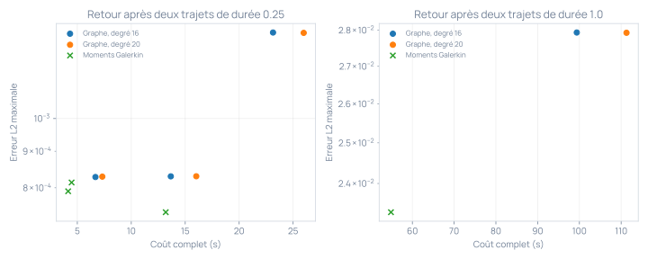
| Supports prescrits | L2 max. | Écart FE / graphe 20 | Transport (s) | Transferts (s) |
|---|---|---|---|---|
| graph12 | 0.0008841 | 4.67e-08 | 0.5307 | 0.5453 |
| graph16 | 0.0008841 | 4.043e-11 | 0.6761 | 0.6896 |
| graph20 | 0.0008841 | 0 | 0.8253 | 0.8353 |
| galerkin2 | 0.0009425 | 0.000822 | 0.1232 | 0.3832 |
Cette dernière comparaison partage exactement 63 changements de support prescrits par les trajectoires matérielles. Le coût géométrique commun est exclu des deux dernières colonnes. Elle sépare les différences entre inverses polynomiaux des rétroactions du contrôleur sur la géométrie.
Quatre champs sinus et cosinus sont transportés à la vitesse constante (1; 0,37) jusqu'au temps 0,2. Le maillage triangulaire est légèrement perturbé. Deux partitions auxiliaires, distantes d'au plus 0,24 cellule par direction, alternent à chaque pas. Le nombre de transferts augmente donc lorsque le pas diminue, sans changement de résolution spatiale. La référence FE exacte est obtenue par rotation des composantes initiales; la référence physique est analytique.
La norme du défaut local est mesurée indépendamment sur l'injection de cette référence, pour chacun des deux supports. La somme de ces défauts donne la borne issue de la preuve; aucun coefficient n'est ajusté à l'erreur finale. La norme de Frobenius sur les quatre champs sert à ce contrôle, tandis que les courbes d'erreur physique affichent le maximum des quatre normes L2. Les valeurs restent des calculs en double précision, sans certification par intervalles.
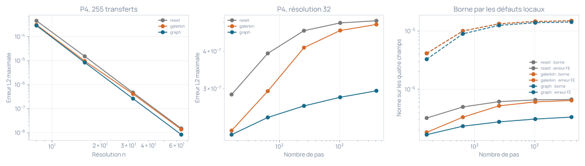
| Cas contrôlés | Rapport erreur / borne max. | Défaut masse max. | Excès énergie max. |
|---|---|---|---|
| 78 | 0.1997 | 3.49e-13 | 1.511e-12 |
| Degré FE | Méthode | n | Pas | L2 max. | Plancher FE |
|---|---|---|---|---|---|
| 4 | reset | 32 | 256 | 4.689e-07 | 1.745e-07 |
| 4 | galerkin | 32 | 256 | 4.116e-07 | 1.745e-07 |
| 4 | graph | 32 | 256 | 2.629e-07 | 1.745e-07 |
| 1 | reset | 32 | 256 | 0.009317 | 0.004398 |
| 1 | galerkin | 32 | 256 | 0.009231 | 0.004398 |
| 1 | graph | 32 | 256 | 0.008414 | 0.004398 |
| 1 | reset | 64 | 256 | 0.002561 | 0.001087 |
| 1 | galerkin | 64 | 256 | 0.002543 | 0.001087 |
| 1 | graph | 64 | 256 | 0.002207 | 0.001087 |
| 2 | reset | 32 | 256 | 0.000337 | 0.0001875 |
| 2 | galerkin | 32 | 256 | 0.0003064 | 0.0001875 |
| 2 | graph | 32 | 256 | 0.0002679 | 0.0001875 |
| 2 | reset | 64 | 256 | 4.257e-05 | 2.309e-05 |
| 2 | galerkin | 64 | 256 | 4.212e-05 | 2.309e-05 |
| 2 | graph | 64 | 256 | 3.382e-05 | 2.309e-05 |
| 4 | reset | 64 | 256 | 1.503e-08 | 5.351e-09 |
| 4 | galerkin | 64 | 256 | 1.367e-08 | 5.351e-09 |
| 4 | graph | 64 | 256 | 8.346e-09 | 5.351e-09 |
Un nouveau diagnostic CUDA intègre directement le carré de la différence FE–auxiliaire sur leurs intersections, avec des poids positifs. L'ordre de quadrature intègre exactement le carré du polynôme Pp–Qq sur chaque intersection affine. Le résidu est formé aux points de quadrature avant d'être élevé au carré. Cette mesure évite la soustraction de deux énergies presque égales; elle ne modifie pas l'évolution numérique.
Les 6 contrôles couvrent P1, P2 et P4, des partitions uniformes et décalées. Sur des champs aléatoires, l'écart relatif maximal à l'identité bilinéaire indépendante vaut 1.07e-15. Pour deux constantes séparées de 1e-12, l'énergie physique est de l'ordre de 1e-24 : la quadrature positive la résout, alors que la formule soustractive retourne une valeur de l'ordre de l'arrondi absolu, parfois négative.
| Mise à jour | Énergie positive | Énergie soustractive | Énergie FE visible |
|---|---|---|---|
| Addition | 9.001e-16 | 8.465e-16 | 4.29e-20 |
| Reprojection | 1.768e-27 | 1.768e-27 | 1.768e-27 |
La mesure positive confirme une mémoire résiduelle physique dans le calcul additif à réaction forte : ce n'est donc pas seulement un défaut du diagnostic soustractif. La reprojection du champ complet ramène aussi cette énergie cachée à l'échelle du champ amorti. Le seuil de rang peut exclure une direction de faible énergie absolue qui reste déterminante relativement à une solution presque nulle.
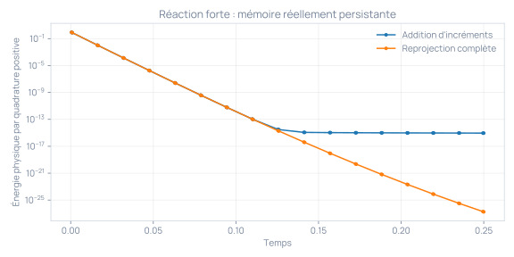
La borne d'erreur pour des supports variables repose sur la conservation de l'observation et la décroissance de l'énergie lors du transfert, ainsi que sur la non-expansivité de l'évolution entre transferts. Les défauts locaux de transport restent dans la borne, notamment le commutateur entre projection et générateur. Ce résultat conditionnel ne fournit ni un ordre de convergence pour les noyaux actuels ni une garantie d'efficacité du contrôleur.
| Campagne | Enregistrés | Prévus |
|---|---|---|
| matched | 18 | 18 |
| adaptive-physics | 24 | 24 |
| adaptive-chebyshev | 12 | 12 |
| moving-separated | 18 | 18 |
| adaptive-separated | 12 | 12 |
| memory-stress | 3 | 3 |
| separated-refinement | 12 | 12 |
| roundtrip-smoke | 6 | 6 |
| roundtrip-long | 48 | 48 |
| auxiliary-return | 8 | 8 |
| source-full | 16 | 16 |
| source-refinement | 6 | 6 |
| products | 32 | 32 |
| monitor-stationary | 12 | 12 |
| monitor-return | 12 | 12 |
| svd | 16 | 16 |
| compressible | 32 | 32 |
| warm-return | 6 | 6 |
| material-monitor | 4 | 4 |
| monitor-fe | 3 | 3 |
| material-phase | 2 | 2 |
| phase-return | 3 | 3 |
| galerkin | 3 | 3 |
| budgeted-return | 4 | 4 |
| budgeted-remaining | 2 | 2 |
| Campagne | Enregistrés | Prévus |
|---|---|---|
| joint-return | 5 | 5 |
| frozen-transfer | 8 | 8 |
| krylov | 16 | 16 |
| krylov-tuned | 4 | 4 |
| krylov-fine | 8 | 8 |
| block-frozen | 5 | 5 |
| gram | 12 | 12 |
| fast-return | 8 | 8 |
| system-coupling | 12 | 12 |
| mixture | 12 | 12 |
| relaxation | 36 | 36 |
| reaction-moments | 36 | 36 |
| reaction-moments-controls | 24 | 24 |
| reaction-moments-fine | 27 | 27 |
| reaction-moments-quadrature | 1 | 1 |
| reaction-projection | 90 | 90 |
| spectral-reaction | 36 | 36 |
| tiled-return-pilot | 1 | 1 |
| long-return-benchmark | 14 | 15 |
| residual-return | 12 | 12 |
| reaction-increment-projection | 90 | 90 |
| reaction-residual-projection | 90 | 90 |
| increment-physical | 18 | 18 |
| increment-reanchor | 2 | 2 |
| increment-conditioning | 2 | 2 |
| Campagne | Enregistrés | Prévus |
|---|---|---|
| increment-conditioning-positive | 2 | 2 |
| graph-return | 6 | 6 |
| graph-return-long | 2 | 2 |
| graph-frozen | 4 | 4 |
| remap-consistency | 27 | 27 |
| remap-consistency-orders | 24 | 24 |
| remap-consistency-fine | 9 | 9 |
| remap-consistency-smallstep | 6 | 6 |
| remap-consistency-interval | 12 | 12 |
| material-minimax | 2 | 2 |
| minimax-return | 3 | 3 |
| diffusion | 20 | 20 |
| Exécution séquentielle | État | Code de sortie |
|---|---|---|
| monitor-stationary | completed | 0 |
| warm-return | completed | 0 |
| remap-bound-validation | completed | 0 |
| compressible | failed | 1 |
| products | completed | 0 |
| svd | completed | 0 |
| source-smoke | completed | 0 |
| source-full | completed | 0 |
| monitor-return | completed | 0 |
| roundtrip-long | completed | 0 |
| Reprise et diagnostics | État | Code de sortie |
|---|---|---|
| warm-validation | completed | 0 |
| compressible | completed | 0 |
| material-monitor | completed | 0 |
| monitor-fe | completed | 0 |
Le premier lancement compressible a échoué pendant la capture CUDA du produit CSR CuPy. La reprise conserve les calculs sur GPU et utilise l'application creuse ordinaire. Les résultats réussis remplacent le fichier vide, tandis que le code de sortie initial reste dans l'historique.
nested-sanitizer : ========= ERROR SUMMARY: 0 errors
memory-transfer-sanitizer : ========= ERROR SUMMARY: 0 errors
ambient-sanitizer : ========= ERROR SUMMARY: 0 errors
chebyshev-sanitizer : ========= ERROR SUMMARY: 0 errors
energy-mesh-sanitizer : ========= ERROR SUMMARY: 0 errors
late-sanitizer : ========= ERROR SUMMARY: 0 errors
coupled-sanitizer : ========= ERROR SUMMARY: 0 errors
krylov-sanitizer : ========= ERROR SUMMARY: 0 errors
reduction-sanitizer : ========= ERROR SUMMARY: 0 errors
graph-sanitizer : ========= ERROR SUMMARY: 0 errors
residual-energy-sanitizer : ========= ERROR SUMMARY: 0 errors
Les validations indépendantes couvrent les degrés 1, 2 et 4, les projections, les adjoints en masse, les constantes, les changements de support et les identités de Gram. Toutes les opérations numériques — recouvrements, quadrature, réductions, matrices denses de contrôle — sont exécutées sur CUDA. Le processeur pilote les expériences et dessine les figures. Il s'agit de prototypes isolés dans experiments/slfe, pas d'une intégration de production au langage variationnel Rodin.
La piste d'article est le couplage FE avec mémoire sur supports variables, accompagné de garanties d'énergie et de coût mesuré. Les conditions manquantes sont une erreur contrôlée pour des vitesses FE générales, un problème couplé où la mémoire apporte un bénéfice indispensable, un contrôleur robuste pour plusieurs structures et une comparaison avec des concurrents GPU plus proches. Le résultat actuel ne justifie pas une revendication de rupture.
Macías-Virgós, Pereira-Sáez et Tanré (2018), paramétrisations de Cayley sur les variétés de Stiefel
Kim et Um (2026), reconstruction semi-lagrangienne presque orthogonale par noyau de Lanczos
Ouardghi, El-Amrani et Seaid (2022), enrichissement adaptatif semi-lagrangien FE
Keith et al. (2026), interpolation et optimisation pour le remap ALE FE
Plewa et Müller (1999), cohérence du transport des fractions de mélange
Saad (1992), approximation de l'action exponentielle par Krylov
Simon et Behrens (2021), reconstruction semi-lagrangienne des sous-échelles
Arnold, Brezzi, Cockburn et Marini (2002), méthodes DG elliptiques
Gaul, Gutknecht, Liesen et Nabben (2013), espaces de Krylov augmentés
Codina, Principe, Guasch et Badia (2007), sous-échelles dynamiques
Casas, Escorihuela-Tomàs et Moreno Casares (2025), formules de commutateurs
Adams, Finn, Knepley et Pusztay, rééchantillonnage par projection FE
Golub et Varga (1961), semi-itérations de Chebyshev
Besse, Deriaz et Madaule (2017), adaptation multirésolution SL-DG
Adams (2026), recouvrements SL-DG sur grilles adaptatives
Nabizadeh et al. (2024), CO-FLIP et remise à zéro des cartes de flot
Einkemmer et Moriggl, SL-DG sur GPU
Les sources sont dans experiments/slfe : matched_benchmark.py, adaptive_study.py, moving_study.py, refinement_study.py, nested_validation.py et ambient_validation.py. Les fichiers results_night2 contiennent les paramètres, erreurs, historiques et empreintes du code. night_fields.py reproduit les champs; night_report.py reconstruit ce rapport sans simulation; restart_theory.tex fournit les hypothèses et preuves. Publication exclusivement sur la branche SLFE du fork keckj/rodin.